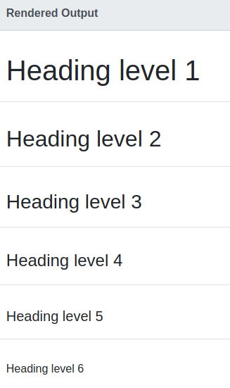

Intro to Markdown
Karl Dunkle Werner
June 29, 2021
Slides:
github.com/karldw/markdown_intro_2021-06-29
Thank you, Pamela!
- #econ_prosem is a great service
What is Markdown?
- Plain text
- Which is a good thing! (See The Plain Person’s Guide to Plain Text Social Science)
- Readable by itself
- That gets converted into HTML
Why?
- Lighter weight than LaTeX
- Easier to jot things down
- Less fiddly
- Failure to compile is very rare
- Usable in places Word and LaTeX aren’t
- e.g. every Github page you’ve seen
- Your own website (come back July 13!)
Why?
- Easy to use with version control (e.g. Git)
- Track changes to your code and your words over time
- Easily search through history
- Prettier than just writing in a
.txtfile
How do you write it?
- Recommended: Find a general-purpose text editor you like
- VS Code, Atom, Emacs, Nano, Sublime, Vi, …
- Or: edit in-website
- Github
- Today: Hedgedoc
Syntax Basics
- Headings
- Items
- Enumerations
- Emphasis
- Math
- Code
- Links
- Images
Headings


Items
Groceries:
- Yeast
- Flour
- Basil
Or with checkboxes (not universal):
- [x] Mozzarella
- [ ] Chili flakesGroceries:
- Yeast
- Flour
- Basil
Or with checkboxes (not universal):
- Mozzarella
- Chili flakes
Enumerations
Colors I know:
1. Magenta
1. Cyan
1. Black
Colors I don't know:
4. Taupe
8. Chartreuse
7. PuceColors I know:
- Magenta
- Cyan
- Black
Colors I don’t know:
- Taupe
- Chartreuse
- Puce
Emphasis
*Italic* or _italic_
**Bold** or __bold__
***Bold italic*** or ___bold italic___
~~strikethrough~~Italic or italic
Bold or bold
Bold italic or bold italic
strikethrough
Math (inline)
- In:
$a^2 + b^2 = c^2$ - Out: \(a^2 + b^2 = c^2\)
Math (display)
\[
\begin{align}
\int_0^\infty f(\cos^2(\psi)) &= z_0\\
&= \pi r^2
\end{align}
\]\[ \begin{align} \int_0^\infty f(\cos^2(\psi)) &= z_0\\ &= \pi r^2 \end{align} \]
Caveats:
- Depends on Mathjax, which is in some, but not all markdown renderers
- The list of supported commands is very long, but it’s not a LaTeX substitute
Code (inline)
- Inline code with single backticks:
- In: `y = x1 + x2`
- Out:
y = x1 + x2
Code (blocks)
- Code blocks with triple backticks
- Optionally add language syntax highlighting (e.g.
r)
- Optionally add language syntax highlighting (e.g.
```r
x = lm(mpg ~ wt + cyl, data=mtcars)
broom::tidy(x)
#> # A tibble: 3 x 5
#> term estimate std.error statistic p.value
#> <chr> <dbl> <dbl> <dbl> <dbl>
#> 1 (Intercept) 39.7 1.71 23.1 3.04e-20
#> 2 wt -3.19 0.757 -4.22 2.22e- 4
#> 3 cyl -1.51 0.415 -3.64 1.06e- 3
```Links
- Plain URLs and emails get auto-linked (usually)
- Text links have the form
[words to display](URL)- In:
[Twitter](https://twitter.com) - Out: Twitter
- In:
- We can also link within the document:
- In:
[Last section](#/comments-and-escapes) - Out: Last section
- In:
Images
- Images are almost identical, but with
!before[- In:
 - Out:
- In:

Tables
- Sometimes easy to read
- Always a pain to write
- Have a computer do it for you (e.g. knitr in R)
| Reg. A | Reg. B |
| ----------- | --------------- |
| 3.14 | 0.01 |
| [1.0, 10.0] | [-0.001, 0.015] |→
| Reg. A | Reg. B |
|---|---|
| 3.14 | 0.01 |
| [1.0, 10.0] | [-0.001, 0.015] |
Tables
x = lm(mpg ~ wt + cyl, data=mtcars)
y = broom::tidy(x)
knitr::kable(y)
#> |term | estimate| std.error| statistic| p.value|
#> |:-----------|---------:|---------:|---------:|---------:|
#> |(Intercept) | 39.686262| 1.7149840| 23.140893| 0.0000000|
#> |wt | -3.190972| 0.7569065| -4.215808| 0.0002220|
#> |cyl | -1.507795| 0.4146883| -3.635972| 0.0010643|| term | estimate | std.error | statistic | p.value |
|---|---|---|---|---|
| (Intercept) | 39.686262 | 1.7149840 | 23.140893 | 0.0000000 |
| wt | -3.190972 | 0.7569065 | -4.215808 | 0.0002220 |
| cyl | -1.507795 | 0.4146883 | -3.635972 | 0.0010643 |
More fancy markdown
- References
- R Markdown (
.Rmd)- Works with Stata too, with some setup
- Direct HTML/CSS
- Footnotes (support varies)
- Pandoc conversion to other formats
References
- Citations (via Pandoc & Citeproc)
- Input:
@Pigouvian_taxes:1932(from my bib file) - Output: Pigou (1932)
- Input:
<!-- Code to ask pandoc to print refs: -->
::: {#refs}
:::Pigou, Arthur Cecil. 1932. The Economics of Welfare. 4th ed. Vol. 2. Macmillan; Co.
R Markdown
- Combines code and text
- Never have to copy updated tables, figures, or numbers into your text
- Works with Markdown or LaTeX
- Use Knitr to covert
.Rmdto.md- Older tool: Sweave
- Use Pandoc to convert
.mdto anything

What does R Markdown look like?
What does R Markdown look like?
Zooming in
Zooming in

R markdown code blocks
- Almost identical to markdown code blocks
- Start with
```{r …}instead of```or```r - Optionally add chunk name and options:
{r mass-flipper, warning = FALSE, message = FALSE,
echo = FALSE, out.width='75%', fig.retina=2}Questions?
- Let’s try out markdown in Hedgedoc (link in the chat)
Links
R Markdown
- RStudio’s markdown guide
- Knitr
- Not just R
- Not just markdown
- Pandoc
Comments and Escapes
\